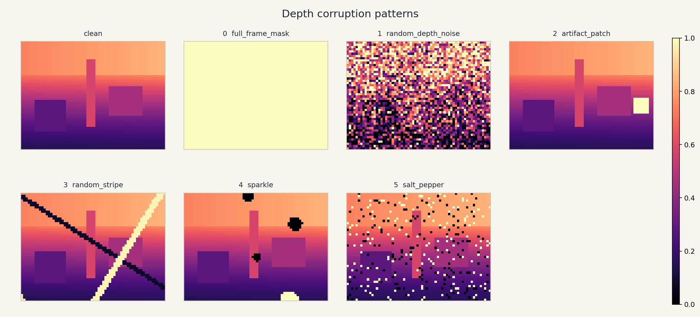
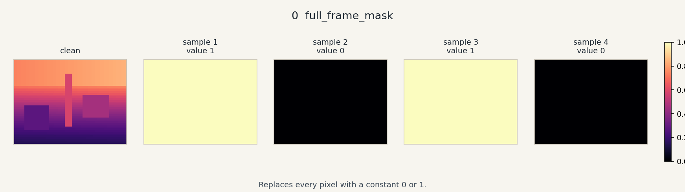
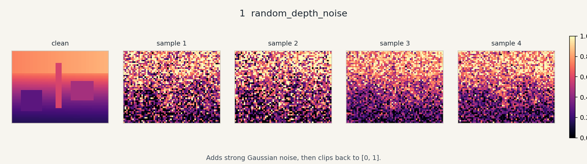
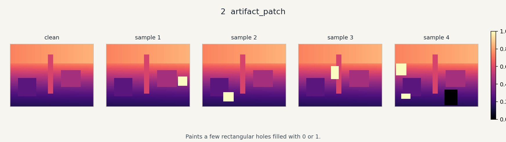
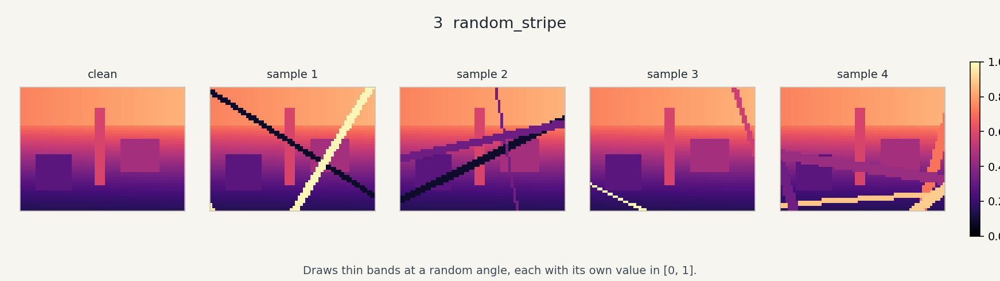
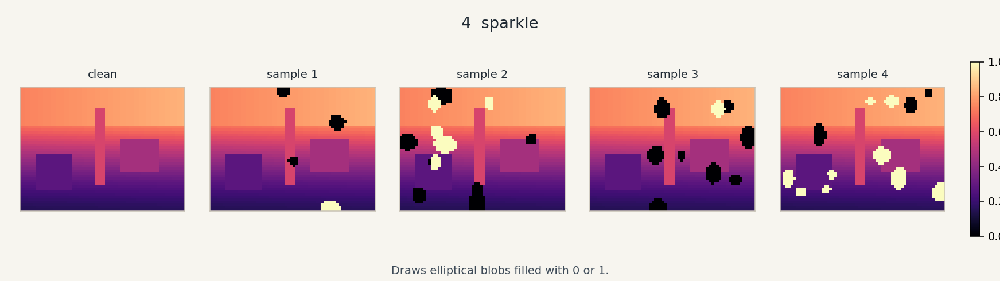
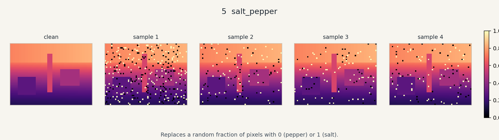

overview
Clean synthetic depth, then one sample of each pattern.
Each strip starts from the same synthetic depth image. Color only displays normalized depth in [0, 1].

Clean synthetic depth, then one sample of each pattern.

Replaces every pixel with a constant 0 or 1.

Adds strong Gaussian noise, then clips back to [0, 1].

Paints a few rectangular holes filled with 0 or 1.

Draws thin bands at a random angle, each with its own value in [0, 1].

Draws elliptical blobs filled with 0 or 1.

Replaces a random fraction of pixels with 0 (pepper) or 1 (salt).